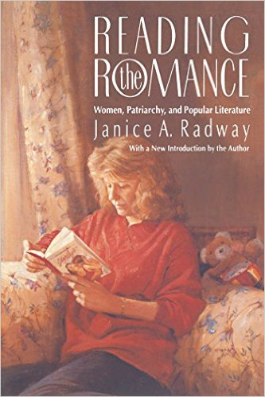

Productive Interpretations
Encouraging Patron Agency through Cultural Criticism
Ryan P. Randall, College of Western Idaho
If you'd like to follow along, load this in your browser: http://www.ryanpatrickrandall.com/talks/capal16.html
Hello!

Overview
- Cultural studies on agency & cultural criticism
- Traditional LIS accounts of patron agency
- Examples of how to encourage agency
Cultural Studies & Agency

"Capitol Crawl" for the ADA

1990 protest for Americans with Disabilities Act
Washrooms

"Culture"

Raymond Williams, Keywords: A Vocabulary of Culture and Society
Culture as practices not just elite connoisseurship
Cultural Criticism

Janice Radway, Reading the Romance and reader response criticism focusing on how readers use texts
Critiques of Library Discourse around Agency
- John Buschman, Libraries, Classrooms, and the Interests of Democracy
- Wayne Wiegand, "To Reposition a Research Agenda"
- Henry Giroux, "Schooling and the Culture of Positivism"
Examples of Using Cultural Criticism
Vivian Harsh, director of Bronzeville library in Chicago:
- Conversations with poets like Langston Hughes
- Readers' discussion forums (more than book clubs)
- Speakers from range of political parties
- Collecting African artwork & material culture
Laura Burt's "Vivian Harsh, Adult Education, and the Library's Role as Community Center"
Pedagogical orientation
- Problem-posing rather than banking model
- Signage that presents a theme rather than a set
- Investing in & displaying material collection with an eye to its pedagogical potential
Works Cited
- Burt, Laura. "Vivian Harsh, Adult Education, and the Library's Role as Community Center." Libraries & the Cultural Record vol. 44, no. 2, 2009, pp. 234-55.
- Buschman, John. Libraries, Classrooms, and the Interests of Democracy: Marking the Limits of Neoliberalism. The Scarecrow P, 2012.
- Giroux, Henry. "Schooling and the Culture of Positivism: Notes on the End of History." 1979. On Critical Pedagogy. Continuum International Publishing Group, 2011, pp. 19-47.
Works Cited, cont.
- Grossberg, Lawrence. Bringing It All Back Home: Essays on Cultural Studies. Duke UP, 1997.
- Radway, Janice A. Reading the Romance: Women, Patriarchy, and Popular Literature. U of North Carolina P, 1984.
- Wiegand, Wayne. "To Reposition a Research Agenda: What American Studies Can Teach the LIS Community about the Library in the Life of the User." The Library Quarterly, vol. 73, no. 4, 2003. pp. 369-82.
- Williams, Raymond. Keywords: A Vocabulary of Culture and Society. Oxford UP, 1976.
Thank You!